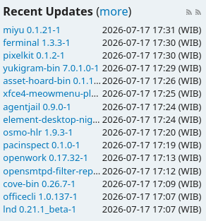

Apa itu Arch User Repository (AUR)?
Arch User Repository (AUR) adalah repositori yang dikelola oleh komunitas pengguna Arch Linux. AUR memungkinkan pengguna untuk berbagi dan menginstal package yang tidak tersedia di repositori resmi Arch Linux.
"The AUR is not supported by Arch. So there's like a huge disclaimer saying that if you're installing a package from this platform... you should verify the contents yourself because we don't verify anything here."
— Orhun Parmaksiz, Developer Advocate di Arch Linux
Sebelum mempelajari lebih lanjut, kita akan bahas dulu tentang apa itu package
Package Manager
Jadi apa itu Package Manager? Package Manager adalah sebuah software yang digunakan untuk mengelola package di sistem operasi. Package Manager memudahkan pengguna untuk menginstal, menghapus, dan memperbarui software di sistem operasi mereka.
Ada banyak Package Manager yang tersedia untuk sistem operasi manapun. Berikut adalah beberapa contohnya:
- APT (Advanced Package Tool) - digunakan di Debian dan Ubuntu
- YUM (Yellowdog Updater Modified) - digunakan di CentOS dan Fedora
- pacman - digunakan di Arch Linux
- brew (HomeBrew) - digunakan di MacOS
- winget (Windows Package Manager) - digunakan di Windows
Siapa di sini baru tahu kalau windows punya package manager sendiri? Aku juga baru tahu saat aku hendak membuat Custom Wrapper CLI untuk windows. Oh ya, jika ingin lihat proyek Custom Wrapper CLI-ku, bisa klik link berikut: Ferminal
Pacman
Kita akan bahas package manager di arch linux yaitu Pacman. Jadi apa itu Pacman? Pacman adalah package manager default arch linux. Dibuat dengan bahasa pemrograman C, mengkombinasikan simplicity binary package format (.pkg.tar.zst) dengan sistem build pada Arch Linux, Serta biasa dipakai untuk menginstall, menghapus dan update software.
Jujur saja saat aku menggunakan package manager di arch linux, aku agak kaget dengan kecepatannya. Karena sebelumnya aku menggunakan package manager di ubuntu yaitu APT, dan menurutku APT itu agak lambat. Dari yang kucari tahu, ternyata pacman menggunakan algoritma yang lebih efisien dibandingkan APT. berfokus murni pada instalasi dan penyelesaian dependensi dasar tanpa otomatisasi berlebih.
Pacman tidak memproses pembaruan konfigurasi yang rumit atau skrip pasca-instalasi yang berat, serta langsung mengunduh dan mengekstrak tarball terkompresi secara efisien dengan manajemen basis data yang sederhana.
Berikut contoh penggunaan Pacman:
sudo pacman -Syu #Digunakan untuk update sistem
sudo pacman -S package_name #Digunakan untuk menginstall package
sudo pacman -Rns package_name #Digunakan untuk menghapus package
sudo pacman -Qs package_name #Digunakan untuk mencari package yang terinstall
sudo pacman -Ss package_name #Digunakan untuk mencari package secara onlineMenurutku, kelebihan dari Arch Linux bukan hanya karena ia menganut filosofi KISS (Keep It Simple, Stupid!) dan rolling release, tapi juga karena pacman yang cepat dan efisien.
Baca Juga: Absolute Arch Linux Experience
Arch User Repository
Cukup sudah membahas pacman, saatnya kita bahas AUR. Arch User Repository atau AUR adalah package manager buatan komunitas. Dibuat dengan kecepatan yang sama dengan Pacman, AUR memungkinkan pengguna untuk menginstall package yang tidak tersedia di repositori resmi Arch Linux. AUR menggunakan format package yang sama dengan Pacman, sehingga pengguna dapat menginstall package.
Untuk menggunakan AUR, kita harus menggunakan AUR Helper seperti Yay atau Paru. AUR Helper adalah alat yang memudahkan pengguna dalam mengelola package dari AUR. Oh ya, jika ingin tahu lebih lanjut tentang AUR Helper, bisa klik link berikut: AUR Helper
Cara menggunakannya cukup sama, misalnya untuk install package tinggal ketik yay -S package_name di terminal. Seperti yang kusebut sebelumnya, AUR ini package dari komunitas, jadi soal keamanan pikirkan sendiri. Sesuai dengan tujuan Arch Linux, sistem dikontrol penuh oleh pengguna.
Jika ingin install AUR Helper seperti yay atau paru bisa klik link berikut:
SSH Key Public dan Private untuk AUR
Aku punya aplikasi python dengan nama Ferminal. Jadi aku akan membuat aplikasi python ini bisa diinstall dengan AUR helper (yay dan paru).
Pertama aku membuat akun di website AUR Aku masukkan email, username dan lain-lain, miriplah dengan membuat akun di website lain. Setelahnya aku harus memasukkan SSH Public Key ke akun AUR-ku, karena untuk mengupload package ke AUR harus menggunakan SSH.
Untuk membuat SSH Public Key, aku menggunakan perintah ssh-keygen di terminal seperti berikut:
ssh-keygen -t ed25519 -f ~/.ssh/aurInti dari perintah tersebut bertujuan untuk membuat ssh key ke file ~/.ssh/aur, dengan tipe ed25519 (Semacam RSA). Setelah itu aku menyalin isi dari file ~/.ssh/aur.pub ke akun AUR-ku, dan menambahkan SSH Key ke akun AUR-ku. Oh, sebelum itu, harus install dulu package openssh di arch linux, karena package ini belum terinstall secara default. Dan juga saat membuat ssh key, jangan lupa untuk menambahkan passphrase agar lebih aman, atau kalau tidak mau juga tidak apa-apa.
Kira-kira isi dari file ~/.ssh/aur.pub seperti ini:
ssh-ed25519 AAAAC3NzaC1lZDI1NTE5AAAAIEEXhdVlKGPDumLNQbrXI0E/NUyBgikBvkyi1tWdFe7i rangs@rangsIngat bahwa ini adalah contoh, jadi jangan menyalin isi dari file ~/.ssh/aur.pub-ku, karena itu adalah SSH Key-ku. Tapi tak apa sih, karena ini adalah SSH Public Key. Jadi saat kau membuat SSH Key, akan ada dua kunci. Kunci publik (public key) dan kunci privat (private key). Kunci publik bisa dibagikan ke orang lain, tapi kunci privat harus dijaga kerahasiaannya. kunci publik tersimpan di file ~/.ssh/aur.pub, sedangkan kunci privat tersimpan di file ~/.ssh/aur.
Satu lagi, setelah copas isi dari file ~/.ssh/aur.pub ke akun AUR, jangan lupa untuk update account. Bodohnya aku malah lupa update account, dan waktuku yang terbuang untuk troubleshooting sampai 1 jam lebih. Jadi jangan sampai lupa update account setelah menambahkan SSH Key (Public Key tentunya).
Aku lupa mengatakan apa itu SSH. Jadi SSH (Secure Shell) adalah protokol jaringan yang digunakan untuk mengakses komputer secara aman melalui jaringan yang tidak aman. SSH menggunakan enkripsi untuk melindungi data yang dikirimkan antara komputer klien dan server. Bisa dibilang remote kendali jarak jauh, tapi aman.
PKGBUILD, .SRCINFO, pyproject.toml
Kita mulai masuk ke inti dari AUR, yaitu PKGBUILD. PKGBUILD adalah file skrip yang digunakan untuk membangun package di Arch Linux. File ini berisi informasi tentang package, seperti nama, versi, deskripsi, dependensi, dan cara membangunnya. PKGBUILD ditulis dalam bahasa pemrograman Bash, dan biasanya disimpan di direktori package. PKGBUILD digunakan oleh AUR Helper untuk membangun package dari source code.
Berikut adalah contoh struktur folder yang kugunakan untuk Ferminal:
Ferminal/
└── docs/
└── src/
└── ferminal/
├── __init__.py
├── main.py
└── utils.py
├── .SRCINFO
├── PKGBUILD
├── pyproject.toml
├── LICENSE
├── README.md
Kita bahas satu persatu dari file PKGBUILD-ku. Berikut adalah isi dari file PKGBUILD-ku:
pkgname=ferminal
_repo=Ferminal
pkgver=1.3.3
pkgrel=1
pkgdesc="Custom Wrapper CLI to make your work faster"
arch=('any')
url="https://github.com/RangS-1/ferminal"
license=('MIT')
depends=(
'python'
'python-requests'
'python-colorama'
)
makedepends=(
'python-build'
'python-installer'
'python-wheel'
'python-setuptools'
)
source=(
"$pkgname-$pkgver.tar.gz::https://github.com/RangS-1/${_repo}/archive/refs/tags/v$pkgver.tar.gz"
)
sha256sums=('14a0a1315ff969871d0cd47be5bdcd779a52427ad33ab2e9fbbee408132784ba')
build() {
cd "$srcdir/${_repo}-${pkgver}"
python -m build --wheel --no-isolation
}
package() {
cd "$srcdir/${_repo}-${pkgver}"
python -m installer \
--destdir="$pkgdir" \
dist/*.whl
install -Dm644 LICENSE \
"$pkgdir/usr/share/licenses/$pkgname/LICENSE"
}Mulai dari baris pertama, pkgname adalah nama package yang akan diinstall. Untuk pkgname harus menggunakan huruf kecil semua, sesuai pedoman Arch Linux. variabel _repo untuk nama repository github yang ada huruf kapital. Tapi seperti yang guruku katakan, lebih baik menggunakan huruf kecil untuk nama repo. Aku jadi tahu alasannya ternyata untuk ini. pkgver untuk versi package, pkgrel untuk release package, pkgdesc untuk deskripsi package, arch untuk arsitektur package, url untuk link ke website package, license untuk lisensi package. depends untuk dependensi package, makedepends untuk dependensi build package, source untuk sumber package, sha256sums untuk checksum package. build() adalah fungsi untuk membangun package, package() adalah fungsi untuk menginstall package.
Baca Juga: Terminal: Kawan Sejati Programmer
Sebelum membuat PKGBUILD, kau harus membuat github release dan github tag agar bisa digunakan. fungsi source() digunakan untuk menginstall source code dari repository github. Sementara sha256sum digunakan untuk validasi file.
Untuk mendapatkan sha256sum, buka github lalu ke github release (Berikut contoh link ke github release: Ferminal v1.3.3). Klik Source Code (tar.gz) untuk mendownload source code, lalu buka terminal dan ketik perintah berikut:
sha256sum ferminal-1.3.3.tar.gzSetelah itu akan muncul output seperti ini:
14a0a1315ff969871d0cd47be5bdcd779a52427ad33ab2e9fbbee408132784ba ferminal-1.3.3.tar.gzNah, yang diambil adalah bagian sebelum nama file, yaitu 14a0a1315ff969871d0cd47be5bdcd779a52427ad33ab2e9fbbee408132784ba. Itu adalah sha256sum dari file ferminal-1.3.3.tar.gz. sha256sum ini cukup penting untuk validasi file, agar tidak ada yang mengubah file tersebut dan sesuai dengan source code.
Setelahnya kita buat file .SRCINFO dengan command berikut:
makepkg --printsrcinfo > .SRCINFOItu akan otomatis membuat file .SRCINFO, .SRCINFO ini semacam file teks metadata dalam ekosistem Arch Linux (dan distro berbasis Arch seperti ALPM/Makedeb).
Oh ya, file pyproject.toml itu digunakan untuk membangun package python, dan file README.md itu digunakan untuk deskripsi package di Github. Berikut contoh isi pyproject.toml
[project]
name = "ferminal"
version = "1.3.3"
description = "Custom Wrapper CLI to make your work faster"
authors = [
{name="RangS"}
]
dependencies = [
"requests",
"colorama",
]
[project.scripts]
ferminal = "ferminal.main:main"
[build-system]
requires = [
"setuptools>=61",
"wheel"
]
build-backend = "setuptools.build_meta"Ingat pada bagian depends? bagian itu digunakan untuk dependensi apa yang digunakan dalam aplikasi yang kita buat. Aku hanya menggunakan dependensi eksternal dengan nama colorama, tapi di arch linux namanya python-colorama. Jadi harus sesuaikan antara nama package python dan nama package arch linux.
Setelah semua siap, kita masukkan kode berikut:
makepkg -siIni digunakan untuk membangun package di sistem komputer kita. Jadi makepkg akan membaca file PKGBUILD dan membangun package sesuai dengan instruksi yang ada di dalamnya. Sebelum selesai, aku sarankan untuk menginstall namcap dengan perintah sudo pacman -S namcap. Namcap ini digunakan untuk memeriksa package yang kita buat, apakah ada kesalahan atau tidak.
namcap PKGBUILDJika tidak ada error, kita bisa masuk ke langkah berikutnya.
Kloning Repository AUR
Aku agak bingung saat pertama kali kloning repository AUR. Karena aku pikir AUR itu mirip dengan github. Kita klik New Repository lalu tinggal clone, ternyata tidak seperti itu. Di AUR, kita langsung cloning tanpa klik New Repository seperti Github. Misalnya tinggal masukkan kode berikut:
git clone ssh://aur@aur.archlinux.org/nama_aplikasimu.gitIni secara otomatis membuat repository untuk AUR jika belum ada. Loh, kalau sudah ada? Kalau sudah ada yang kau masih bisa clone, hanya saja kau tidak punya akses untuk push ke repository tersebut. Jadi sebelumnya, buka dulu website aur.archlinux.org, Di sebelah kanan cari dulu packagenya. Jika sudah ada yang pakai, ya mau tak mau cari nama lain. Untungnya saatku ingin upload package Ferminal, tidak ada package AUR dengan nama ferminal juga.
Setelah git clone, kan akan ada folder kosong tuh. misalnya folder dengan nama ferminal. Kita tinggal copy file PKGBUILD dan .SRCINFO kedalamnya. Jika sudah copy paste, tinggal masukkan kode berikut:
git add .
git commit -m "Pesan commit apa ajalah bebas."
git push origin masterBagi kalangan programmer, pasti menyadari sesuatu yang unik di sini. Kenapa kita harus push dengan nama master? bukankah di Github bernama Main?. Dari yang kutanyakan pada AI, nama master sudah lama digunakan pada awal pengembangan Git. Tapi hari kehari komunitas programmer mulai mengubah nama branch utama mereka dengan Main. Alasannya adalah karena namanya lebih netral saja. Sebenarnya branch main dan master tidak ada bedanya sama sekali.
Baca Juga: Programming yang Sebenarnya
Waduh, aku lupa bahwa kau harus membuat file config di folder ~/.ssh/. Intinya buat file kosong dengan perintah touch atau semacamnya dengan nama config. lalu masukkan kode berikut:
Host aur.archlinux.org
HostName aur.archlinux.org
User aur
IdentityFile ~/.ssh/aur
IdentitiesOnly yesJadi itu digunakan agar kloning ssh bisa dilakukan dan otomatis disamakan antara public key dan private key. Tahukan kalau file ~/.ssh/aur itu private key-mu?
jika kau tidak bisa push, coba lihat kau sedang di branch mana. Ubah branch dengan git branch -M master. Setelah selesai semua proses panjang tersebut, waktunya kita cek di AUR.

Di sebelah kanan, ada Recent Updates. Nah jika packagemu ada, berarti berhasil. Waktunya install dengan Yay!.
yay -Rns nama_package #Digunakan untuk hapus package sebelumnya
Siapa tahu kau masih menyimpan hasil dari makepkg -si sebelumnya.
Masukkan kode berikut:
yay -S nama_packageJika berhasil, harusnya aplikasimu sudah bisa digunakan dengan mengetik nama aplikasi/packagenya di terminal. Yay! berhasil mengupload dan menginstall aplikasi ke AUR. Oh, jika diminta passphrase saat push tinggal masukkan saja passphrasenya, jangan bilang lupa sama passphrase sendiri -_-.
Kesimpulan
Jujur saja saat aku melakukan semua ini terasa sangat menyenangkan. Aku belajar apa itu AUR, sejarah git tentang nama main dan master, tak lupa juga pengalaman Upload Aplikasi/Package ini katanya tidak akan diajarkan diperkuliahan. Murni pengalaman pribadi. Intinya disini kita hanya perlu clone repository aur, lalu masukkan file PKGBUILD dan .SRCINFO saja. Jika ingin belajar lebih lanjut, silakan tonton video berikut: Link ke Video